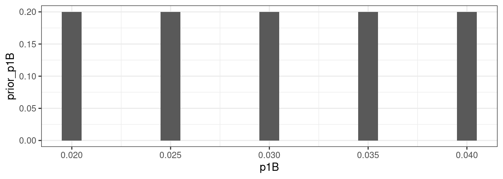
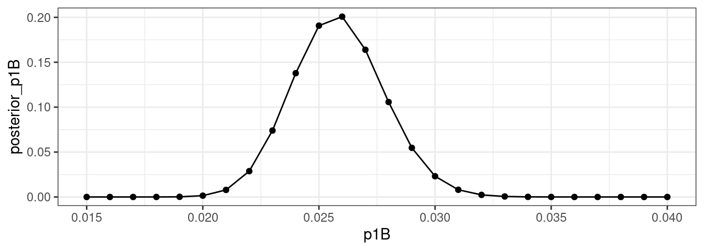
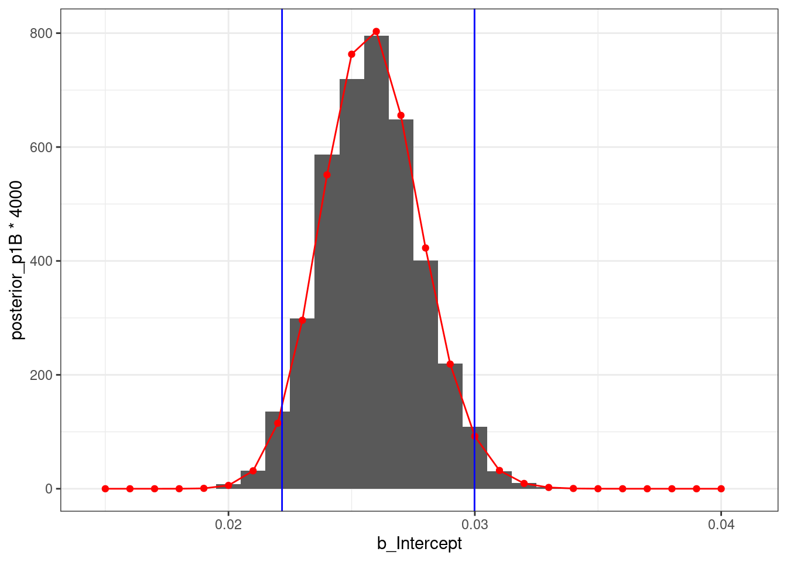

Chapter 9 Statistical Models II
- Sometimes we have data in a format that doesn’t allow us a to formulate a generative model that goes all the way.
9.0.1 Example 1
- For example here is data from two SinoVac phase-III trials (for the ‘CoronaVac’ vaccine). [Data: Jan 15, 2021]
| country | group | total participants | COVID-19 cases | incidence (estimated rate) | estimated vaccine efficacy |
|---|---|---|---|---|---|
| Brazil | placebo | ~6500 | 167 | ~0.026 | ~0.5 \((1-0.013/0.026)\) |
| vaccine | ~6500 | 85 | ~0.013 | ||
| Turkey | placebo | 570 | 26 | ~0.046 | ~0.913 \((1-0.004/0.046)\) |
| vaccine | 752 | 3 | ~0.004 |
FYI: The vaccine efficacy is ‘is the percentage reduction of disease in a vaccinated group of people compared to an unvaccinated group’, we will calculate it as \(1-incidence_{vaccine}/incidence_{placebo}\) for the present purposes.
I’d like to model it similarly to our dative model, as below. (Keep in mind, this is not a mechanistic model of infection, but a statistical model. A lens through which we choose to look at the data.)

Figure 9.1: A schematic of the infection model.
Our estimate of the vaccine efficacy would be \(eff = 1-p_2/p_1\).
- So how do we compute the likelihood of each data point given the parameters?
- In the dative data set, our data points were 0s and 1s. Each corresponded to a single observation.
- Here, our observations are aggregates (i.e., 26 out of 570). That’s a bit different.
- We could make up a data set with ‘single observations’ that matches this statistic, and it will work in many cases, but not always.
There is a better solution, though.
9.0.2 Example 2
- The mammalian sleep data set. How do we model the number of hours animals sleep?
## [1] 12 17 14 15 4 14 9 7 10 3 5 9 10 12 10 8 9 17 5 18 4 20 3 3 10
## [26] 11 15 12 10 2 3 6 6 8 10 3 19 10 14 14 13 12 20 15 11 8 14 8 4 10
## [51] 16 10 14 9 10 11 12 14 4 6 11 18 5 13 9 10 8 11 11 17 14 16 13 9 9
## [76] 16 4 16 9 5 6 12 10- No idea. But we have to do it somehow, right?
9.1 Probability Distributions
- Luckily, our problems are not unique, and very cool solutions have been developed.
For many problems, it has been worked out what the probability distributions of some common generative processes are.
- A probability distribution is an assignment of probabilites to events (i.e., an assignment of numbers such that it follows the laws of probability).
A probability distribution with discrete outcomes can be characterized by its probability mass function (PMF).
- Example: I could describe the outcomes of an experiment where I take one marble from a bag with one blue and three marbles with either of the following ditributions, depending on whether I’m interested in the particular marbles identity, or just their color:
- Distribution 1:
\(P(marble~1~[blue] ) = 0.25\)
\(P(marble~2~[white]) = 0.25\)
\(P(marble~3~[white]) = 0.25\)
\(P(marble~4~[white]) = 0.25\) - Distribution 2:
\(P(blue~marble~[1]) = 0.25~~~~~~~~~~~\)
\(P(white~marble~[2,3,~or~4]) = 0.75\)
- Distribution 1:
9.1.1 Bernoulli Distribution
Below is the probability mass function for a Bernoulli distribution with the parameter \(p=.6\).
Generative process assumed by the Bernoulli distribution: a single “trial” which can result in either“success” or “failure”.

Figure 9.2: A schematic of the infection model.
- Examples: coin flip (H/T), drawing one marble (W/B), shooting (H/M)
library(ggplot2)
df <- data.frame(successes = 0:1, prob = dbinom(0:1, size = 1, prob = .6) )
ggplot(df, aes(successes, prob)) + geom_bar(stat = "identity", width = 0.1)+scale_x_continuous(breaks=0:1) + facet_wrap(~"Bernoulli Distribution (p=.6)") + theme_bw()
9.2 Binomial Distribution
- Generative process assumed by the binomial distribution: \(n\) trials with a fixed probability \(p\) of success. We count the number of successes.
Figure 9.3: A schematic of the infection model.
- Below are the PMFs for a binomial distribution with the parameters \(n={2,10}\) and \(p={0.3, 0.7}\).
- The value at every point \(k\) represents the probability of \(k\) successes out of \(n\) attempts if the probability of a success on each trial is \(p\).

- Examples of such processes are: flipping coins, looking at shirts in a store, yes/no acceptability judgements, searching a corpus, lending money, …
- Numbers generated by a mechanism that fits this description will will be distributed binomially (\(X \sim B(n, k)\)).
- There is an equation for the PMF, but to us it’s simply
dbinom(..., n, p),pbinom()andrbinom(...).
9.2.1 Gaussian Distribution (‘Normal Distribution’)
- Generative process assumed by the gassian distribution: it is limiting case of a ‘substantial’ number of factors contributing to an outcome positively or negatively.
- Think about the generative process roughly as below:
Figure 9.4: A schematic of the infection model.

- There is an equation for the PDF, but to us it’s simply
dnorm(..., n, p),pnorm()andrnorm(...).
9.3 A likelihood function for the vaccine data
| country | group | total participants | COVID-19 cases | [log-]likelihood |
|---|---|---|---|---|
| Brazil | placebo | ~6500 | 167 | dbinom(167, 6500, \(p_{1B}\)[, log=T]) |
| vaccine | ~6500 | 85 | dbinom(85, 6500, \(p_{2B}\)[, log=T]) | |
| Turkey | placebo | 570 | 26 | dbinom(26, 570, \(p_{1T}\)[, log=T]) |
| vaccine | 752 | 3 | dbinom(3, 752, \(p_{2T}\)[, log=T]) |
- OK. So let’s write one log-likelihood function for the Brazil trial, and one for the Turkey trial and plot the log-likelihood as a function of the parameters \(p_{1B,T}\) and \(p_{2B,T}\).
9.4 Bayesian Inference I
- Now we know the relative likelihood of the data under different parameters \(\theta\) (in our case: \(p_1, p_2\)), i.e., \(P(D|\theta)\). [Think of \(\theta\) as something of a pronoun for parameters.]
- But I want to know the relative likelihood of the parameters given the data \(P(\theta|D)\).
- According to the definition of conditional probability, we know two things to be true:
- \(P(H|D) = P(H, D) / P(D)\)
\(\Longrightarrow\) \(P(H|D) \cdot P(D) = P(H, D)\) - \(P(D|H) = P(D, H) / P(H)\)
\(\Longrightarrow\) \(P(D|H) \cdot P(H) = P(D, H)\)
- \(P(H|D) = P(H, D) / P(D)\)
- Because \(P(H, D)\) and \(P(H, D)\) are the same thing (the joint probability of \(H\) and \(D\)), the left sides of the above equations in brackets are also equal:
- \(P(H|D) \cdot P(D) = P(D|H) \cdot P(H)\)
\(\Longrightarrow\) \(P(H|D) = \frac{ P(D|H) \cdot P(H) }{P(D)}\)
- \(P(H|D) \cdot P(D) = P(D|H) \cdot P(H)\)
- The result we just obtained is known as the Bayes Theorem:
\[P(H|D) = \frac{ P(D|H) \cdot P(H) }{P(D)}\]
- P(H|D): probability of a hypothesis after seeing the data, or the posterior probability of the hypothesis.
- P(D|H): probability of seeing such data under that hypothesis, or the likelihood of the data under the hypothesis.
- P(H): probability of the hypothesis being true, or the prior probability of the hypothesis.
- P(D): probability of seeing such data under any hypothesis, or the marginal probability of the data.
- In other words: \[Posterior~prob. = \frac{ Likelihood \cdot Prior~prob. }{Marginal~prob.~of~the~data}\]
9.5 Returning to Example 1
- Let’s use only the placebo arm of the Brazil trial, i.e., ‘167 events on ~6500 trials’ to estimate a plausible range for the incidence in similar groups, under similar conditions.
- We know that the parameter \(p_{1B}\) is probably somewhere in the vicinity of the incidence rate (i.e., \(0.026\)). The question is, how close a vicinity?
- We’ll use the Bayes Theorem:
9.5.1 Likelihood
- Let’s use only the placebo group of the Brazil data and assume that we have only five possibly hypotheses:
- \(H_1\):\(~p_1=0.020\)
- \(H_2\):\(~p_1=0.025\)
- \(H_3\):\(~p_1=0.030\)
- \(H_4\):\(~p_1=0.035\)
- \(H_5\):\(~p_1=0.040\)
- Let’s compute \(P(D|H)\), the likelihood of the data under each hypothesis. We know how to do it, just use
dbinom.
## [1] 2.249124e-04 2.934130e-02 3.547394e-03 3.281750e-06 8.184725e-11
9.5.2 Prior
- Now what do we do about the prior? I have no idea. So let’s use what is called a flat prior: All hypotheses seem equally likely a-priori. Since there are 5 hypotheses, we therefore assign each hypothesis a probability of \(1/5\).
## [1] 0.2 0.2 0.2 0.2 0.2
9.5.3 Marginal probability of the data
- So what is this marginal probability of the data? That is, the average probability of the data, i.e., under all possible hypotheses (weighted by their prior probability).
\[ P(D) = \sum_{i} P(D|H_i) \cdot P(H_i) \] - Please note that it’s the sum of the expressions in the numerator.
- If the concept seems very alien to you, it may be based on the misconception that it’s a ‘real probability’, i.e., something that exists in the real world.
- However, it is model-based construct. That is, under the kind of model we assume generated the data, what is the probability of such data?
- Another way to think about \(P(D)\) is that it’s simply a ‘normalizing constant’. Its purpose it to make sure that the probabilities add up to 1.
## [1] 0.0066233789.5.4 Posterior probability
- Remember, \[Posterior~probability_{(H_i)} = \frac{ Likelihood_{(H_i)} \cdot Prior~probability_{(H_i)} }{Marginal~prob.~of~the~data}\]
- Let’s use that to compute the posterior probability of our hypotheses.

9.5.5 And now again, for
p1B <- seq(0.015, 0.040, .001) # hypotheses
likelihood <- dbinom(x=167, size=6500, prob=p1B) # likelihood
prior_p1B <- rep(1/length(p1B), length(p1B)) # posterior
marginal_prob_data <- sum(likelihood * prior_p1B) # marginal prob of data
posterior_p1B <- (likelihood * prior_p1B) / marginal_prob_data # posterior for p1B 
9.6 Bayesian Inference II
- Luckily, we don’t have to do this every time. We can perform Bayesian with the R packages brms/rstan.
- In contrast to what we did above, though, we don’t get back a plot, but a number of samples from the posterior distribution.
- Let’s take a look at how it works:
# load brms (you'll need to install 'brms', 'rstan', and possibly Rtools, depending on the system)
library(brms)
# define data frame
df <- data.frame(n_yes=167, n=6500)
# fit brms model
m1 <- brm(n_yes|trials(n) ~ 1, # model specification
data = df, # data
family = binomial("identity"), # assume that the outcome is binomially distributed
cores = 4, # use 4 cores
file = "./models/model1" # save to file (WARNING: if file exists, model won't be fitted again even if it changed)
)
summary(m1)## Family: binomial
## Links: mu = identity
## Formula: n_yes | trials(n) ~ 1
## Data: df (Number of observations: 1)
## Samples: 4 chains, each with iter = 2000; warmup = 1000; thin = 1;
## total post-warmup samples = 4000
##
## Population-Level Effects:
## Estimate Est.Error l-95% CI u-95% CI Rhat Bulk_ESS Tail_ESS
## Intercept 0.03 0.00 0.02 0.03 1.00 1458 1719
##
## Samples were drawn using sampling(NUTS). For each parameter, Bulk_ESS
## and Tail_ESS are effective sample size measures, and Rhat is the potential
## scale reduction factor on split chains (at convergence, Rhat = 1).- As you see, the model …
- … provides coefficient estimates in the
Estimatecolumn underPopulation-Level Effects(estimate = \(0.03\); rounded). - … provides credible intervals (95%) in the
l-95% CI, andu-95% CIcolumns underPopulation-Level Effects(\(CrI = [0.02; 0.03]\)). - The most important result is the 95% credible interval (usually ‘CrI’, sometimes ‘CI’). Our model tells us that with 95% probability, the parameter is in this range.
- … provides coefficient estimates in the
# extract samples from the model and take a look at them
samples1 <- posterior_samples(m1)
head(samples1, 5)## b_Intercept lp__
## 1 0.02728792 -20.31070
## 2 0.02728792 -20.31070
## 3 0.02182273 -22.15158
## 4 0.02572990 -19.99310
## 5 0.02499430 -20.05733## lower upper
## 0.02217407 0.02998686
## attr(,"credMass")
## [1] 0.95# plot the samples histogram ...
p <- ggplot(samples1, aes(b_Intercept)) + geom_histogram(breaks=c(p1B-.001/2,0.040+.001) )
# ... anong with our old approximation ...
p <- p + geom_point(data=data.frame(p1B, posterior_p1B), aes(x=p1B, y=posterior_p1B*4000), color = "red") +
geom_line(data=data.frame(p1B, posterior_p1B), aes(x=p1B, y=posterior_p1B*4000), color = "red")
# ... and the 95% CrI
p + geom_vline(xintercept = cri95['lower'], color = "blue") + geom_vline(xintercept = cri95['upper'], color = "blue")
9.7 Back to our incidence rates
9.7.1 Brazil
- Estimate a model under the assumption that \(p = a + b \cdot c\_is\_vaccine\), where c_is_vaccine is a centered predictor.
- Intercept: \(a\) is the average incidence
- Slope: \(b\) is the difference between \(p_{1B}\) and \(p_{1T}\)
- Remember, the model will return samples that represent the posterior probability distribution over the parameters \(a\) and \(b\), not the samples!
# define data frame
df2 <- data.frame(n_yes = c(167, 85),
n = c(6500, 6500),
c_is_vaccine = c(-0.5, 0.5)
)
# fit brms model
m2 <- brm(n_yes|trials(n) ~ 1 + c_is_vaccine, # model specification
data = df2, # data
family = binomial("identity"), # assume that the outcome is binomially distributed
cores = 4, # use 4 cores
file = "./models/model2" # save to file (WARNING: if file exists, model won't be fitted again even if it changed)
)
summary(m2)## Family: binomial
## Links: mu = identity
## Formula: n_yes | trials(n) ~ 1 + c_is_vaccine
## Data: df2 (Number of observations: 2)
## Samples: 4 chains, each with iter = 2000; warmup = 1000; thin = 1;
## total post-warmup samples = 4000
##
## Population-Level Effects:
## Estimate Est.Error l-95% CI u-95% CI Rhat Bulk_ESS Tail_ESS
## Intercept 0.02 0.00 0.02 0.02 1.00 2462 2378
## c_is_vaccine -0.01 0.00 -0.02 -0.01 1.00 1395 1502
##
## Samples were drawn using sampling(NUTS). For each parameter, Bulk_ESS
## and Tail_ESS are effective sample size measures, and Rhat is the potential
## scale reduction factor on split chains (at convergence, Rhat = 1).## b_Intercept b_c_is_vaccine lp__
## 1 0.02008888 -0.009867631 -14.53036
## 2 0.01943221 -0.012430289 -13.49045
## 3 0.02058865 -0.014269747 -14.03007
## 4 0.02052979 -0.015209252 -14.22080
## 5 0.01968251 -0.011715166 -13.62410# apply the reverse logic of the linear model to get posterior distributions for p1B and p2B from the infection model above
samples_p1B <- samples2$b_Intercept - 0.5* samples2$b_c_is_vaccine
samples_p2B <- samples2$b_Intercept + 0.5* samples2$b_c_is_vaccine
# use these samples to compute the posterior distribution of efficacy
samples_eff_Brazil <- 1 - samples_p2B/samples_p1B
# compute exact credible interval
(cri95_eff_Brazil <- HDInterval::hdi(samples_eff_Brazil))## lower upper
## 0.3494192 0.6147580
## attr(,"credMass")
## [1] 0.95# plot the samples histogram ...
p <- ggplot(data=NULL, aes(samples_eff_Brazil)) + geom_histogram(bins=50)
# ... and the 95% CrI
p + geom_vline(xintercept = cri95_eff_Brazil['lower'], color = "blue") + geom_vline(xintercept = cri95_eff_Brazil['upper'], color = "blue")
9.7.2 Turkey
- Now let’s do the same for the Turkey trial …